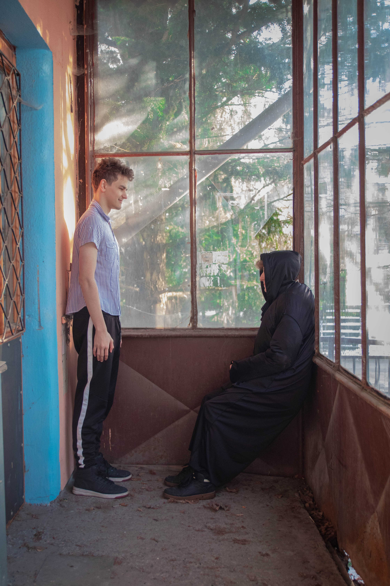
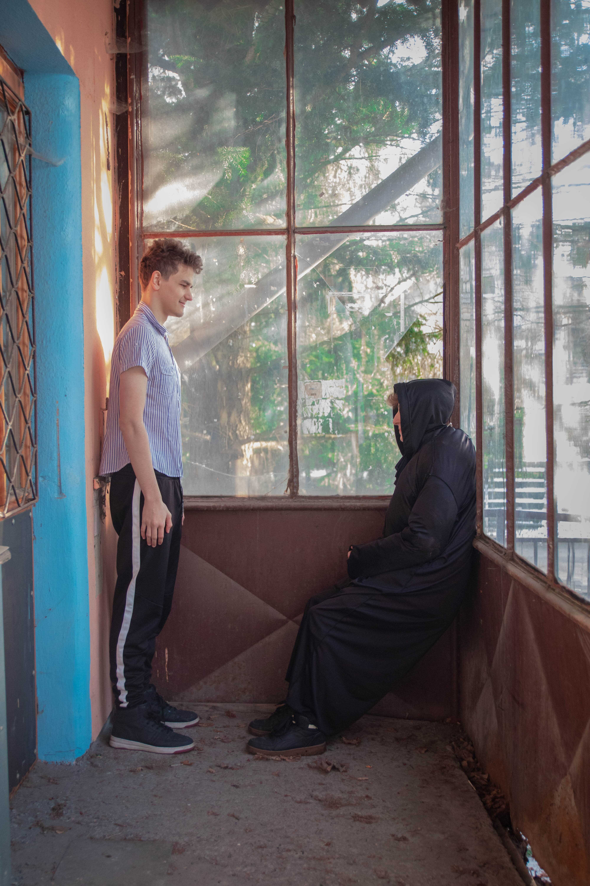
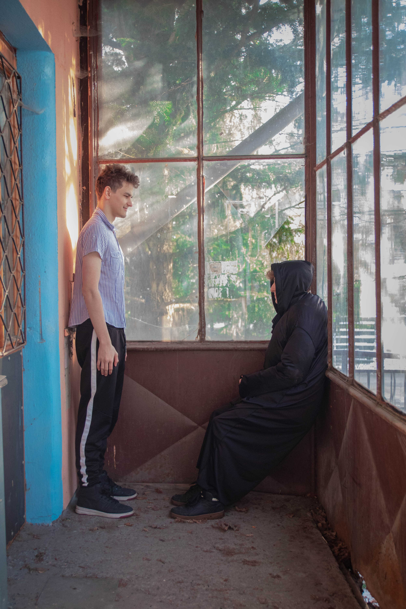

Finální obraz
 

Autor, kterého jsme si vybrali, byl Henri Matisse. Na výběru jeho obrazu jsme se jednohlasně shodli už ve třídě při rozdělování autorů. Z výběru obrazu i samo vyplynulo, kdo bude mít jakou pozici při vytváření fotky. V týmu jsme byli tři a bylo nám jasné, že jeden musí fotit, proto jsme hledali obraz, na kterém budou 2 lidé.
Vojta má kvalitní fotoaparát a zkušenosti s focením, proto pro něj byl úkol jasný. Fotit. Na Dana a Davida zbyla role před fotoaparátem. David měl možnost sehnat černý hábit, proto na něj připadla role sedící ženy. A Dan měl za úkol sehnat aspoň jeden kousek modrobílého oblečení.
„Kde budeme fotit?“, to byla druhá otázka, která zazněla při přípravě fotky. Davida napadlo, že bychom mohli projekt vyfotit na zřícenině hradu Vikštejn u Vítkova. Je to sice zřícenina, ale náznak oken tam určitě bude a příroda za okny taky.
Nastala první komplikace. David je celý březen na projektu Erasmus+ v Polsku. Proto jsme měli zhruba týden na vyfocení projektu. Nechtěli jsme to prodlužovat a domluvili jsme se, že se sejdeme na Vikštejně na začátku jarních prázdnin. Na messengeru jsme vytvořili skupinu, kde jsme komunikovali. Nejtěžší na přípravě bylo najít vhodné autobusové spoje, abychom na sebe na Vikštejně dlouho nečekali.
Spojení jsme našli a nezbývalo nic jiného než vyrazit. Každý z jiného města. Dan z Malých Hoštic, Vojta z Hradce nad Moravicí a David z Vítkova. David a Vojta na místo dorazili a čekali na Dana, který napsal, že dojede později, protože jeho první autobus měl zpoždění a druhý autobus mu tím pádem ujel. A tady nastala komplikace. Autobusy z Opavy do Vítkova jedou více směry a ne každá linka jede přes Vikštejn. To Dan nevěděl a nasedl do autobusu, který jede sice do Vítkova, ale ne přes Vikštejn.
Než by Dan došel na Vikštejn z Vítkova, další autobus by z Vikštejnu už nejel a my bychom se nedostali domů. Proto musel dojít Vojta a David do Vítkova a hodně improvizovat, protože plán vyfotit projekt na Vikštejně nám nevyšel.
Jakmile jsme došli do Vítkova, čekal na nás Dan a mohli jsme společně přemýšlet, kde projekt vyfotíme. Po cestě jsme míjeli Vítkovskou nemocnici, a protože nemocnice ve Vítkově je původní zámek, mysleli jsme si, že tam půjde něco vymyslet.
Nemýlili jsme se! Hned u vjezdu je budova bývalé vrátnice, u které je také vstupní veranda. Budova byla trochu rozbořená, ale veranda nás zaujala natolik, že jsme se rozhodli pořídit zde finální fotografii.
Trochu jsme si lámali hlavu, kde seženeme židli. Tento problém jsme vyřešili rychle. Protože na původním obrazu má židle stejnou barvu, jako stěna a je skoro neviditelná, na naší remake fotografii je židle také neviditelná. Smetli jsme pavučiny a fotka byla na světě!
